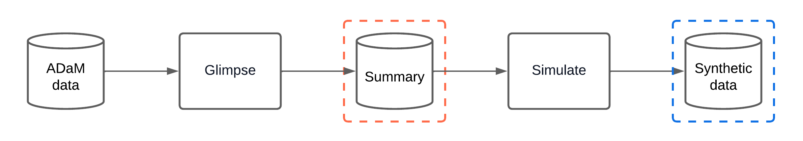

Introduction
synadam generates synthetic ADaM (Analysis Data Model)
datasets from real clinical trial data, removing identifiable patient
information while preserving the structure of the original datasets.
Important: The synthetic data produced by
synadam is not realistic. Values are
generated to match the structural characteristics and ranges of the
original data but do not preserve statistical distributions. This
package is designed for use cases where exact values do not matter, such
as:
- Testing the generation of clinical tables.
- Validating data processing pipelines.
- Developing and debugging analysis code without access to real patient data.
High-level design
synadam uses a two-phase “glimpse-then-simulate”
approach:
- Glimpse: Extract statistical summaries from real data (ranges, unique values, NA patterns).
- Simulate: Generate synthetic data from those summaries.
This provides a clear, traceable interface between real and synthetic data, allowing users and reviewers to inspect exactly what information is retained.

Supported dataset types
| Type | Description | Example |
|---|---|---|
| ADSL | Subject-level data (one row per subject) | Demographics, treatment assignments |
| BDS | Basic Data Structure (longitudinal) | Lab results (ADLB), vitals (ADVS) |
| OCCDS | Occurrence Data Structure (event-based) | Adverse events (ADAE), concomitant meds |
| TTE | Time-to-Event (survival analysis) | Overall survival (ADTTE) |
End-to-end example
This example uses sample data inspired by the PHUSE CDISC Pilot
Study, included in inst/extdata/ for demonstration.
library(synadam)
#>
#> Attaching package: 'synadam'
#> The following object is masked from 'package:stats':
#>
#> simulateStep 1: Auto-generate a configuration file
Point generate_study_config() at a directory containing
your .sas7bdat files. It scans the files, infers dataset
types and column roles using CDISC conventions, and writes a draft YAML
configuration:
yaml_path <- synadam::generate_study_config(
adam_dir = temp_adam_dir,
output_dir = temp_output_dir,
seed = 42
)The generated YAML uses heuristics to classify columns into their
roles. Fields with weaker signal are tagged with inline
# REVIEW comments so you know what to verify:
cat(readLines(yaml_path), sep = "\n")
#> # Auto-generated by generate_study_config().
#> # Fields marked REVIEW were inferred with low confidence -
#> # verify them before running simulate_study().
#>
#> output_dir: "/tmp/RtmpuS86XG/syn_output"
#> seed: 42
#>
#> datasets:
#> adae:
#> dataset_type: "occds"
#> path: "/tmp/RtmpuS86XG/adam_data/adae.sas7bdat"
#> id_cols: [USUBJID]
#> seq_col: AESEQ
#> flag_cols: []
#> ordered_col_sets: # REVIEW: X/XN/XL groups detected
#> - [AESEV, AESEVN]
#>
#> adlb:
#> dataset_type: "bds"
#> path: "/tmp/RtmpuS86XG/adam_data/adlb.sas7bdat"
#> id_cols: [USUBJID]
#> param_cols: [PARAM, PARAMCD]
#> visit_cols: [AVISIT, AVISITN] # REVIEW: visit_cols are optional
#> flag_cols: [ANL01FL] # REVIEW: matched *FL pattern
#> ordered_col_sets: # REVIEW: X/XN/XL groups detected
#> - [TRTA, TRTAN]
#>
#> adsl:
#> dataset_type: "adsl"
#> path: "/tmp/RtmpuS86XG/adam_data/adsl.sas7bdat"
#> id_cols: [USUBJID, SUBJID]
#> treatment_cols: [TRT01A, TRT01AN]
#> flag_cols: [SAFFL, ITTFL, EFFFL] # REVIEW: matched *FL pattern
#> ordered_col_sets: # REVIEW: X/XN/XL groups detected
#> - [REGION1, REGION1N]Step 2: Review and edit the configuration
Before running the simulation, review the generated YAML:
- Verify
dataset_typeis correct for each dataset. - Check that
treatment_cols,flag_cols, andordered_col_setsare appropriate. - Remove any
flag_colsyou don’t need to preserve. - Add any
ordered_col_setsnot auto-detected (e.g.,AEBODSYS/AEDECOD).
Step 3: Simulate the study
Once satisfied with the configuration, generate all synthetic datasets:
synadam::simulate_study(config_path = yaml_path)
#> ----- Glimpsing adsl (adsl) dataset -----
#> Loading dataset from /tmp/RtmpuS86XG/adam_data/adsl.sas7bdat
#> Glimpsing treatment/flag columns
#> 2 treatment/flag combination(s) with count = 1 were masked and added to the most common combination.
#> Glimpsing column(s): REGION1, REGION1N
#> Glimpsing column(s): STUDYID
#> Glimpsing column(s): USUBJID
#> Glimpsing column(s): SUBJID
#> Glimpsing column(s): SITEID
#> Glimpsing column(s): AGE
#> Glimpsing column(s): AGEU
#> Glimpsing column(s): SEX
#> Glimpsing column(s): RACE
#> Glimpsing column(s): ETHNIC
#> Glimpsing column(s): COUNTRY
#> Glimpsing column(s): HEIGHTBL
#> Glimpsing column(s): WEIGHTBL
#> Glimpsing column(s): BMIBL
#> Glimpsing column(s): TRTSDT
#> Simulating column(s): treatment, flag
#> Simulating column(s): REGION1, REGION1N
#> Simulating column(s): STUDYID
#> Simulating column(s): USUBJID
#> Simulating column(s): SUBJID
#> Simulating column(s): SITEID
#> Simulating column(s): AGE
#> Simulating column(s): AGEU
#> Simulating column(s): SEX
#> Simulating column(s): RACE
#> Simulating column(s): ETHNIC
#> Simulating column(s): COUNTRY
#> Simulating column(s): HEIGHTBL
#> Simulating column(s): WEIGHTBL
#> Simulating column(s): BMIBL
#> Simulating column(s): TRTSDT
#> ----- Glimpsing adae (occds) dataset -----
#> Loading dataset from /tmp/RtmpuS86XG/adam_data/adae.sas7bdat
#> Glimpsing occurrence counts, ID and sequence columns
#> Glimpsing ADSL columns from synthetic ADSL
#> Glimpsing column(s): AESEV, AESEVN
#> Glimpsing column(s): AEBODSYS
#> Glimpsing column(s): AEDECOD
#> Glimpsing column(s): AESER
#> Glimpsing column(s): AEREL
#> Glimpsing column(s): ASTDT
#> Glimpsing column(s): AENDT
#> ----- Glimpsing adlb (bds) dataset -----
#> Loading dataset from /tmp/RtmpuS86XG/adam_data/adlb.sas7bdat
#> Glimpsing PARAM/VISIT columns
#> Glimpsing ADSL columns from synthetic ADSL
#> Glimpsing column(s): TRTA, TRTAN
#> Glimpsing column(s): AVAL
#> Glimpsing column(s): BASE
#> Glimpsing column(s): CHG
#> Glimpsing column(s): ANL01FL
#> Glimpsing column(s): ADT
#> Saving study summary to /tmp/RtmpuS86XG/file47a35f60e9e1.rds...
#> ----- Simulating adsl -----
#> Simulating column(s): treatment, flag
#> Simulating column(s): REGION1, REGION1N
#> Simulating column(s): STUDYID
#> Simulating column(s): USUBJID
#> Simulating column(s): SUBJID
#> Simulating column(s): SITEID
#> Simulating column(s): AGE
#> Simulating column(s): AGEU
#> Simulating column(s): SEX
#> Simulating column(s): RACE
#> Simulating column(s): ETHNIC
#> Simulating column(s): COUNTRY
#> Simulating column(s): HEIGHTBL
#> Simulating column(s): WEIGHTBL
#> Simulating column(s): BMIBL
#> Simulating column(s): TRTSDT
#> Saving adsl to /tmp/RtmpuS86XG/syn_output/syn_adsl.rds...
#> ----- Simulating adae -----
#> Simulating occurrence counts
#> Simulating sequence column
#> Simulating column(s): AESEV, AESEVN
#> Simulating column(s): AEBODSYS
#> Simulating column(s): AEDECOD
#> Simulating column(s): AESER
#> Simulating column(s): AEREL
#> Simulating column(s): ASTDT
#> Simulating column(s): AENDT
#> Saving adae to /tmp/RtmpuS86XG/syn_output/syn_adae.rds...
#> ----- Simulating adlb -----
#> Simulating PARAM/VISIT and ADSL columns
#> Simulating column(s): param, visits
#> Simulating column(s): adsl, cols
#> Simulating column(s): TRTA, TRTAN
#> Simulating column(s): AVAL
#> Simulating column(s): BASE
#> Simulating column(s): CHG
#> Saving adlb to /tmp/RtmpuS86XG/syn_output/syn_adlb.rds...Synthetic datasets are saved as individual .rds files in
the output directory:
list.files(temp_output_dir, pattern = "\\.rds$")
#> [1] "syn_adae.rds" "syn_adlb.rds" "syn_adsl.rds"
syn_adsl <- readRDS(file.path(temp_output_dir, "syn_adsl.rds"))
head(syn_adsl)
#> # A tibble: 6 × 21
#> STUDYID USUBJID SUBJID SITEID TRT01A TRT01AN AGE AGEU SEX RACE ETHNIC
#> <chr> <chr> <chr> <dbl> <chr> <dbl> <dbl> <chr> <chr> <chr> <chr>
#> 1 CDISCPILO… USUBJI… SUBJI… 704 Place… 0 75 YEARS F BLAC… HISPA…
#> 2 CDISCPILO… USUBJI… SUBJI… 704 Place… 0 76 YEARS F BLAC… HISPA…
#> 3 CDISCPILO… USUBJI… SUBJI… 702 Place… 0 61 YEARS F BLAC… HISPA…
#> 4 CDISCPILO… USUBJI… SUBJI… 703 Xanom… 2 73 YEARS F BLAC… HISPA…
#> 5 CDISCPILO… USUBJI… SUBJI… 703 Xanom… 2 69 YEARS M WHITE NOT H…
#> 6 CDISCPILO… USUBJI… SUBJI… 703 Xanom… 2 66 YEARS M WHITE NOT H…
#> # ℹ 10 more variables: SAFFL <chr>, ITTFL <chr>, EFFFL <chr>, REGION1 <chr>,
#> # REGION1N <dbl>, COUNTRY <chr>, HEIGHTBL <dbl>, WEIGHTBL <dbl>, BMIBL <dbl>,
#> # TRTSDT <date>
# Each dataset carries a version attribute for traceability
attr(syn_adsl, "synadam_version")
#> [1] "0.3.1"Writing the YAML configuration manually
If you prefer full control (or need to fine-tune the auto-generated draft), author the YAML by hand. The schema supports all four dataset types:
output_dir: "/path/to/output_directory"
seed: 42
datasets:
adsl:
dataset_type: "adsl"
path: "/path/to/adsl.sas7bdat"
id_cols: [USUBJID, SUBJID]
treatment_cols: [TRT01A, TRT01AN]
flag_cols: [SAFFL, ITTFL, EFFFL] # Optional
ordered_col_sets: [[REGION1, REGION1N]] # Optional
adlb:
dataset_type: "bds"
path: "/path/to/adlb.sas7bdat"
id_cols: [USUBJID]
param_cols: [PARAM, PARAMCD]
visit_cols: [AVISIT, AVISITN] # Optional
flag_cols: [ANL01FL] # Optional
adae:
dataset_type: "occds"
path: "/path/to/adae.sas7bdat"
id_cols: [USUBJID]
seq_col: AESEQ
ordered_col_sets: [[AEBODSYS, AEDECOD]] # Optional
adtte:
dataset_type: "tte"
path: "/path/to/adtte.sas7bdat"
param_cols: [PARAM, PARAMCD]
censor_cols: [CNSR, EVNTDESC, CNSDTDSC] # OptionalNote: Optional fields can be set to []
or omitted entirely.
Granular control: glimpse and simulate individually
For more control, call the glimpse_*() and
simulate_*() functions directly:
adsl_data <- synadam::read_sas7bdat(file.path(temp_adam_dir, "adsl.sas7bdat"))
# Glimpse: extract structural summary
adsl_summary <- synadam::glimpse_adsl(
adsl = adsl_data,
id_cols = c("USUBJID", "SUBJID"),
treatment_cols = c("TRT01A", "TRT01AN"),
flag_cols = c("SAFFL", "ITTFL", "EFFFL"),
ordered_col_sets = list(c("REGION1", "REGION1N")),
seed = 42
)
#> Glimpsing treatment/flag columns
#> 2 treatment/flag combination(s) with count = 1 were masked and added to the most common combination.
#> Glimpsing column(s): REGION1, REGION1N
#> Glimpsing column(s): STUDYID
#> Glimpsing column(s): USUBJID
#> Glimpsing column(s): SUBJID
#> Glimpsing column(s): SITEID
#> Glimpsing column(s): AGE
#> Glimpsing column(s): AGEU
#> Glimpsing column(s): SEX
#> Glimpsing column(s): RACE
#> Glimpsing column(s): ETHNIC
#> Glimpsing column(s): COUNTRY
#> Glimpsing column(s): HEIGHTBL
#> Glimpsing column(s): WEIGHTBL
#> Glimpsing column(s): BMIBL
#> Glimpsing column(s): TRTSDT
# Simulate: generate synthetic data
syn_adsl <- synadam::simulate_adsl(adsl_summary, seed = 42)
#> Simulating column(s): treatment, flag
#> Simulating column(s): REGION1, REGION1N
#> Simulating column(s): STUDYID
#> Simulating column(s): USUBJID
#> Simulating column(s): SUBJID
#> Simulating column(s): SITEID
#> Simulating column(s): AGE
#> Simulating column(s): AGEU
#> Simulating column(s): SEX
#> Simulating column(s): RACE
#> Simulating column(s): ETHNIC
#> Simulating column(s): COUNTRY
#> Simulating column(s): HEIGHTBL
#> Simulating column(s): WEIGHTBL
#> Simulating column(s): BMIBL
#> Simulating column(s): TRTSDT
head(syn_adsl)
#> # A tibble: 6 × 21
#> STUDYID USUBJID SUBJID SITEID TRT01A TRT01AN AGE AGEU SEX RACE ETHNIC
#> <chr> <chr> <chr> <dbl> <chr> <dbl> <dbl> <chr> <chr> <chr> <chr>
#> 1 CDISCPILO… USUBJI… SUBJI… 704 Place… 0 75 YEARS F BLAC… HISPA…
#> 2 CDISCPILO… USUBJI… SUBJI… 704 Place… 0 76 YEARS F BLAC… HISPA…
#> 3 CDISCPILO… USUBJI… SUBJI… 702 Place… 0 61 YEARS F BLAC… HISPA…
#> 4 CDISCPILO… USUBJI… SUBJI… 703 Xanom… 2 73 YEARS F BLAC… HISPA…
#> 5 CDISCPILO… USUBJI… SUBJI… 703 Xanom… 2 69 YEARS M WHITE NOT H…
#> 6 CDISCPILO… USUBJI… SUBJI… 703 Xanom… 2 66 YEARS M WHITE NOT H…
#> # ℹ 10 more variables: SAFFL <chr>, ITTFL <chr>, EFFFL <chr>, REGION1 <chr>,
#> # REGION1N <dbl>, COUNTRY <chr>, HEIGHTBL <dbl>, WEIGHTBL <dbl>, BMIBL <dbl>,
#> # TRTSDT <date>For BDS, OCCDS, and TTE datasets:
-
glimpse_bds()/simulate_bds()— longitudinal data (ADLB, ADVS) -
glimpse_occds()/simulate_occds()— occurrence data (ADAE, ADCM) -
glimpse_tte()/simulate_tte()— time-to-event data (ADTTE)
See ?glimpse_bds, ?glimpse_occds,
?glimpse_tte for full documentation.
Splitting glimpse from simulate
simulate_study() runs both phases in one call. To run
them separately — for example, to glimpse on a machine that has access
to the real .sas7bdat files and then simulate elsewhere —
use glimpse_study() and
simulate_study_from_summary().
study_summary_path <- file.path(temp_output_dir, "study_summary.rds")
# Phase 1: glimpse only. Requires the real SAS files.
synadam::glimpse_study(
config_path = yaml_path,
study_summary_path = study_summary_path
)
#> ----- Glimpsing adsl (adsl) dataset -----
#> Loading dataset from /tmp/RtmpuS86XG/adam_data/adsl.sas7bdat
#> Glimpsing treatment/flag columns
#> 2 treatment/flag combination(s) with count = 1 were masked and added to the most common combination.
#> Glimpsing column(s): REGION1, REGION1N
#> Glimpsing column(s): STUDYID
#> Glimpsing column(s): USUBJID
#> Glimpsing column(s): SUBJID
#> Glimpsing column(s): SITEID
#> Glimpsing column(s): AGE
#> Glimpsing column(s): AGEU
#> Glimpsing column(s): SEX
#> Glimpsing column(s): RACE
#> Glimpsing column(s): ETHNIC
#> Glimpsing column(s): COUNTRY
#> Glimpsing column(s): HEIGHTBL
#> Glimpsing column(s): WEIGHTBL
#> Glimpsing column(s): BMIBL
#> Glimpsing column(s): TRTSDT
#> Simulating column(s): treatment, flag
#> Simulating column(s): REGION1, REGION1N
#> Simulating column(s): STUDYID
#> Simulating column(s): USUBJID
#> Simulating column(s): SUBJID
#> Simulating column(s): SITEID
#> Simulating column(s): AGE
#> Simulating column(s): AGEU
#> Simulating column(s): SEX
#> Simulating column(s): RACE
#> Simulating column(s): ETHNIC
#> Simulating column(s): COUNTRY
#> Simulating column(s): HEIGHTBL
#> Simulating column(s): WEIGHTBL
#> Simulating column(s): BMIBL
#> Simulating column(s): TRTSDT
#> ----- Glimpsing adae (occds) dataset -----
#> Loading dataset from /tmp/RtmpuS86XG/adam_data/adae.sas7bdat
#> Glimpsing occurrence counts, ID and sequence columns
#> Glimpsing ADSL columns from synthetic ADSL
#> Glimpsing column(s): AESEV, AESEVN
#> Glimpsing column(s): AEBODSYS
#> Glimpsing column(s): AEDECOD
#> Glimpsing column(s): AESER
#> Glimpsing column(s): AEREL
#> Glimpsing column(s): ASTDT
#> Glimpsing column(s): AENDT
#> ----- Glimpsing adlb (bds) dataset -----
#> Loading dataset from /tmp/RtmpuS86XG/adam_data/adlb.sas7bdat
#> Glimpsing PARAM/VISIT columns
#> Glimpsing ADSL columns from synthetic ADSL
#> Glimpsing column(s): TRTA, TRTAN
#> Glimpsing column(s): AVAL
#> Glimpsing column(s): BASE
#> Glimpsing column(s): CHG
#> Glimpsing column(s): ANL01FL
#> Glimpsing column(s): ADT
#> Saving study summary to /tmp/RtmpuS86XG/syn_output/study_summary.rds...
# The study summary is one .rds with all summaries plus seed and version.
str(readRDS(study_summary_path), max.level = 2)
#> List of 4
#> $ summaries :List of 3
#> ..$ adsl:List of 16
#> .. ..- attr(*, "col_order")= chr [1:21] "STUDYID" "USUBJID" "SUBJID" "SITEID" ...
#> .. ..- attr(*, "output_length")= int 12
#> .. ..- attr(*, "class")= chr [1:2] "summary_adsl" "summary"
#> ..$ adae:List of 9
#> .. ..- attr(*, "col_order")= chr [1:11] "STUDYID" "USUBJID" "AESEQ" "AEBODSYS" ...
#> .. ..- attr(*, "class")= chr [1:2] "summary_occds" "summary"
#> ..$ adlb:List of 8
#> .. ..- attr(*, "col_order")= chr [1:13] "STUDYID" "USUBJID" "PARAM" "PARAMCD" ...
#> .. ..- attr(*, "class")= chr [1:2] "summary_bds" "summary"
#> $ seed : int 42
#> $ synadam_version: chr "0.3.1"
#> $ glimpsed_at : POSIXct[1:1], format: "2026-07-02 09:11:22"
# Phase 2: simulate from the study summary. Does not need the SAS files.
split_output_dir <- file.path(tempdir(), "syn_output_split")
synadam::simulate_study_from_summary(
study_summary_path = study_summary_path,
output_dir = split_output_dir
)
#> ----- Simulating adsl -----
#> Simulating column(s): treatment, flag
#> Simulating column(s): REGION1, REGION1N
#> Simulating column(s): STUDYID
#> Simulating column(s): USUBJID
#> Simulating column(s): SUBJID
#> Simulating column(s): SITEID
#> Simulating column(s): AGE
#> Simulating column(s): AGEU
#> Simulating column(s): SEX
#> Simulating column(s): RACE
#> Simulating column(s): ETHNIC
#> Simulating column(s): COUNTRY
#> Simulating column(s): HEIGHTBL
#> Simulating column(s): WEIGHTBL
#> Simulating column(s): BMIBL
#> Simulating column(s): TRTSDT
#> Saving adsl to /tmp/RtmpuS86XG/syn_output_split/syn_adsl.rds...
#> ----- Simulating adae -----
#> Simulating occurrence counts
#> Simulating sequence column
#> Simulating column(s): AESEV, AESEVN
#> Simulating column(s): AEBODSYS
#> Simulating column(s): AEDECOD
#> Simulating column(s): AESER
#> Simulating column(s): AEREL
#> Simulating column(s): ASTDT
#> Simulating column(s): AENDT
#> Saving adae to /tmp/RtmpuS86XG/syn_output_split/syn_adae.rds...
#> ----- Simulating adlb -----
#> Simulating PARAM/VISIT and ADSL columns
#> Simulating column(s): param, visits
#> Simulating column(s): adsl, cols
#> Simulating column(s): TRTA, TRTAN
#> Simulating column(s): AVAL
#> Simulating column(s): BASE
#> Simulating column(s): CHG
#> Saving adlb to /tmp/RtmpuS86XG/syn_output_split/syn_adlb.rds...
list.files(split_output_dir, pattern = "\\.rds$")
#> [1] "syn_adae.rds" "syn_adlb.rds" "syn_adsl.rds"Pass seed to simulate_study_from_summary()
to draw a different synthetic replicate from the same summaries; omit it
to reuse the seed stored in the study summary.
Privacy protection
synadam implements multiple privacy mechanisms:
- Structure, not values: Preserves column names, unique values, and ranges, but not distributions or clinical patterns.
- Singleton removal: Unique values or combinations appearing only once are excluded and replaced with more common values.
- NA noise: 5% of NA positions are randomly flipped to prevent exact pattern reproduction.
Limitations
Synthetic data from synadam is not
suitable for:
- Realistic simulations — does not preserve statistical distributions.
- Statistical analysis — results will not reflect real clinical findings.
- Regulatory submissions — unless explicitly approved.
Disclaimer
⚠️ Users are responsible for correctly specifying all column categories in the configuration. Incorrect configuration can result in private data leaking into synthetic data.
-
ID columns (
id_cols): Must include all subject identifiers. -
Ordered column sets
(
ordered_col_sets): Should include the minimum sets of related columns required for your use case.
Always review your configuration carefully and validate that synthetic data does not contain identifiable information before sharing outside GxP environments.